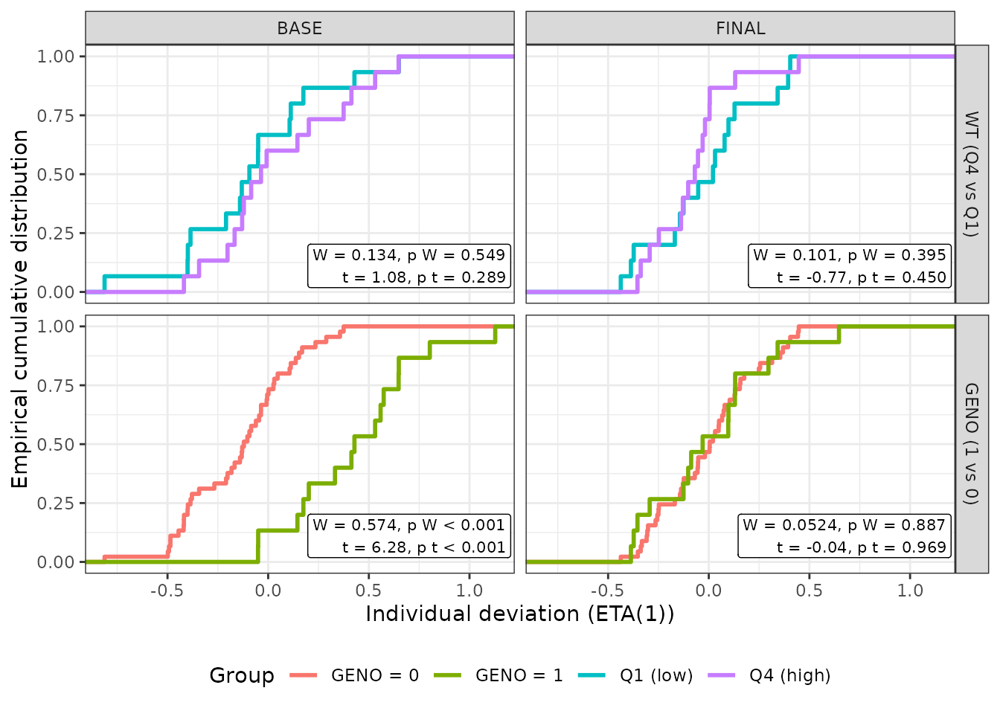
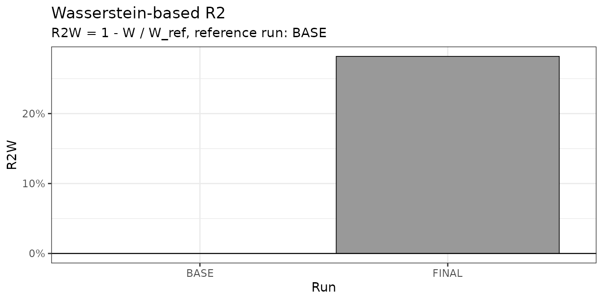

Covariate assessment with the Wasserstein distance
Source:vignettes/wasserstein.Rmd
wasserstein.Rmdnm_wasserstein() implements the method of Simon, Hulot
and von Fabeck (Front Pharmacol 2026, doi:10.3389/fphar.2026.1804989). For one or several
runs, it compares the distribution of the individual deviations (ETA)
between groups of subjects defined by a covariate:
- the distance between the two distributions is the 1-Wasserstein distance W (the area between their empirical cumulative distributions); its p-value comes from a permutation test, and a t-test is given for reference;
- a categorical covariate compares its levels; a continuous covariate
compares its 4th and 1st quartiles
(
continuous = "extremes", default) or every pair of quartiles (continuous = "pairwise", Bonferroni-adjusted); - a Wasserstein-based R2,
R2W = 1 - W/W_ref, where W is the distance of the ETA distribution to 0, measures how much of the variability left in the reference run is explained by a model; the ETA shrinkage is reported with it.
Example
The example project of the package contains a BASE model without
covariate and a FINAL model with body weight and genotype on CL
(simulated data, see vignette("nmpilot")). The covariates
are read from the data set named in $DATA; the ETA on CL is
found from the model code.
library(nmpilot)
ex <- system.file("extdata", "example", package = "nmpilot")
w <- nm_wasserstein(
runs = c(BASE = file.path(ex, "run1.reg"), FINAL = file.path(ex, "run2.reg")),
covariates = c("WT", "GENO"),
eta = "CL",
n_perm = 2000
)
w
#> Wasserstein covariate assessment (2000 permutations)
#> ETA: ETA(1) | reference run: BASE
#>
#> run covariate type comparison n_1 n_0 W p_W t_stat p_t
#> BASE WT continuous Q4 vs Q1 15 15 0.1340 0.549 1.08 0.289
#> BASE GENO categorical 1 vs 0 15 45 0.5740 < 0.001 6.28 < 0.001
#> FINAL WT continuous Q4 vs Q1 15 15 0.1010 0.395 -0.77 0.450
#> FINAL GENO categorical 1 vs 0 15 45 0.0524 0.887 -0.04 0.969
#>
#> Wasserstein-based R2 (R2W = 1 - W/W_ref, W = distance of the ETA to 0):
#> run eta n W_to_zero R2W omega shrinkage_pct
#> BASE ETA(1) 60 0.285 0.000 0.1430 1.7
#> FINAL ETA(1) 60 0.205 0.282 0.0683 3.5In the BASE model the distribution of the CL deviations differs strongly between genotypes; in the FINAL model, where genotype is in the model, the two distributions overlap.
plot(w)
plot(w, type = "r2w")
Several pairs of quartiles
wp <- nm_wasserstein(c(BASE = file.path(ex, "run1.reg")), covariates = "WT",
eta = "CL", n_perm = 2000, continuous = "pairwise")
wp$tests[, c("comparison", "W", "p_W", "p_W_adj")]
#> comparison W p_W p_W_adj
#> 1 Q2 vs Q1 0.1080039 0.7576212 1.0000000
#> 2 Q3 vs Q1 0.2162271 0.2528736 1.0000000
#> 3 Q4 vs Q1 0.1339521 0.5597201 1.0000000
#> 4 Q3 vs Q2 0.2380052 0.1489255 0.8935532
#> 5 Q4 vs Q2 0.1601287 0.2763618 1.0000000
#> 6 Q4 vs Q3 0.1092407 0.8515742 1.0000000Inputs
runs takes run directories of any name
(run1.reg, run1.nm7, run1/) or a
run prefix ("C:/study/run1" for run1.ext,
run1.phi and run1.ctl in the same folder).
Each run needs its .phi (individual ETAs),
.ext (OMEGA, for the shrinkage) and control stream. The
covariates can also be given directly with data, a
data.frame or a CSV file with one row per subject.